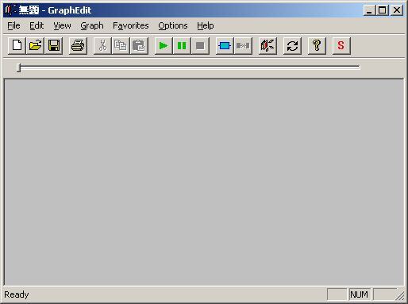
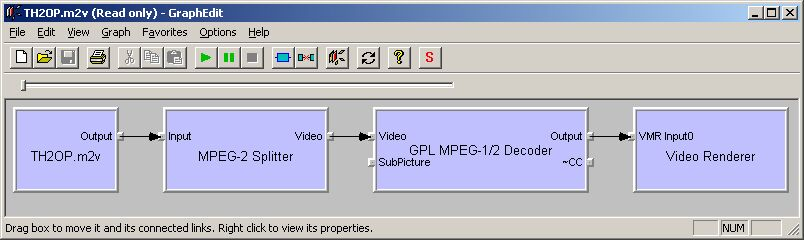
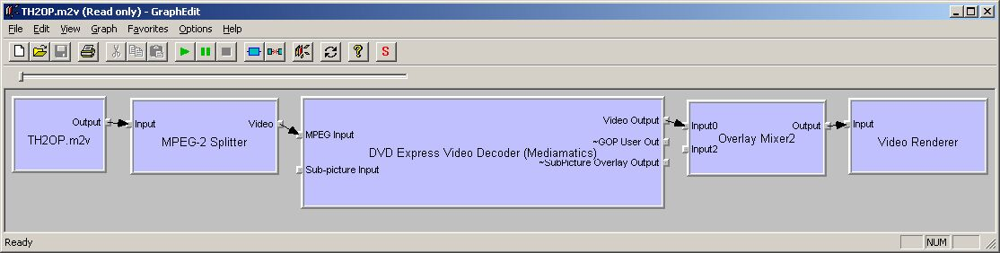
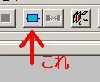
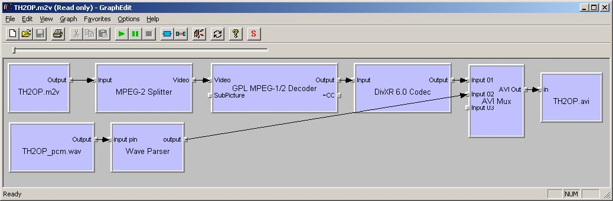

| PS2版 ToHeart２のOP動画をPMFに変換しよう！ |
| はじめに |
| このページでは、P/ECEの動画プレイヤーで利用するPMFを作る際の参考として、手始めにPS2版ToHeart2のOP動画をPMFに変換する方法を紹介します。 一般的なMPEGやAVI形式の動画をPMFに変換するのは、PMFプレイヤー付属の一発変換ツール（PMF_Convertor）にドラッグ＆ドロップするだけで良いので、やり方を説明するまでもないのですが、やっぱり何かサンプルがあった方が良いと思い、 ヅラChuさんの2005年夏コミ本に連動して、このページを作ることにしました。 興味を持たれた方は、是非ヅラChuさんのP/ECE本の方もよろしくお願いします。 私も数ページですが、記事を書かせていただきましたので、そちらの方もよろしく～（＾＾ あ、そうそう。 ToHeart2のOP動画をPMFに変換するのは、ヅラChuさんが先にやられているので、ほとんど同じことを書くことになりますが、ヅラChuさんの例にある、映像データ（M2V)と音声データ（WAV)を多重化するツール「TMPGEnc」は、試用期間が過ぎると、MPEG2が扱えなくなってしまいますので、ここでは、TMPGEncを使わずに、全て（TH2のゲームディスク以外）無料で手に入るツールを使って変換する方法を紹介したいと思います。 |
| 必要なもの |
| ToHeart2のOP動画をPMFに変換するに当たって、必要なモノを以下に書きます。 ・PS2版ToHeart2のゲームディスク（買ってください（＾＾；） ・PSS_demux（PSSファイル非多重化ツール（C）ふぁおさん） ・DirectX SDK Windows2000までの方はDirectX 9.0 SDK Update (Summer 2004)の方をダウンロードしてください。 XPの方は最新版で良いと思います。 っていうか、必要なのは、SDKの中に含まれる”graphedt.exe”というDirectShow用のツールなので、すでに過去のSDKをお持ちで、このツールがインストールされている方は上記のDirectX SDKのダウンロードは不要です。 ・GPL MPEG-1/2 Decoder フリーのMPEG1/2デコーダフィルターです。これが無いとAVIに上手く変換できないみたいです。 リンク先のページの「MpegDecoder012.msi」をダウンロードしてインストールしてください。 これは、先述の”graphedt.exe”上で使えるほか、WindowsMediaPlayerやRealPlayerでも使われます。 ・DivXコーデック 今回紹介する方法では、PSS形式の動画をGraphEditを使ってAVI形式のファイルに変換するのですが、普通にAVIに変換すると、未圧縮のファイルとなり、数GBの空き容量を必要とするので、DivXエンコーダフィルターを利用することにより、DivXで圧縮されたAVIファイルを作成します。 リンク先右上の「無料トライアル」から、「DivXCreate.exe」をダウンロードし、指示に従ってインストールしてください。 これによって、DivXエンコーダ他が、DirectShowフィルターとしてインストールされます。 |
| やりかた |
| ①PSS形式から映像と音声を分離 必要なツールのPSS_demuxを使って、PSS形式のOP動画ファイル”TH2OP.PSS”を映像部（MPEG2形式のビデオ）と音声部（WAVE形式）のファイルに分割します。 PSSファイルは、MediaPlayerClassicを使うと普通に再生できるようですが、このツールは独自の展開ルーチンを使って再生していて、DirectShowフィルターを利用していないので、DirectShowフィルターを使って変換するPMF_Convertorでは手も足も出ないのですよ（- -； と、いうわけで、ToHeart2ゲームディスクの「P」というフォルダの中にある、”TH2OP.PSS”というファイルをハードディスクのどこかにコピーして、コピーしたものをPSS_dwmuxにドラッグ＆ドロップします。 すると、みゃーっとゲージが伸びたところで、ドロップした”TH2OP.PSS”と同じフォルダに”TH2OP.m2v” と”TH2OP_pcm.wav”というファイルができると思います。 ②GraphEditでフィルターを準備 次に、GraphEditを起動し、先ほどの”TH2OP.m2v”をドラッグ＆ドロップします。 すると、MPEG2を再生できる環境が整っていると、以下の様に勝手に再生に必要なDirectShowフィルターが選択されて表示されます。 |
|
 GraphEditを起動したところ  TH2OP.m2vをドラッグ&ドロップしたところ、運が良いとこうなります（笑）  普通はこうなると思います。 必要なのは、左のほうの、”TH2OP.m2V”と"MPEG-2 Splitter"と、”GPL MPEG-1/2 Decoder”なので、 下の方の図のようになった方は、MPEG-2 Splitterより右のフィルタを削除しちゃってください。 削除は普通に選択してDeleteキーで出来ます。 そして、  をクリックして、フィルタ―一覧の、「DirectShow Filters」の中から、「GPL MPEG-1/2 Decoder」をダブルクリックして追加してください。 はじめの方の図の様にいきなり「GPL MPEG-1/2 Decoder」が出てきた方も、Video Rendererは必要 ありませんので、削除しておいてください。 ちなみに、上記の２つの図の状態で、緑の再生ボタンをクリックすると、OP動画のビデオのみが再生 できます（＾＾ さて、次に、またフィルター一覧から、以下のものを追加して次の図の様に接続します。 フィルター同士の接続は、フィルターの枠の小さい出っ張りの部分をクリックしてドラッグすることで、 矢印が表示されますので、それを接続先のフィルタの入力側の出っ張りにひっつけてください。 ＜追加するフィルター＞ ・AVI Muxフィルター 映像と音声を合成してAVIとして出力するフィルターです。 「DirectShow Filters」の上の方にあります。 ・File Source(Async.)フィルター いわゆるソースフィルターです。ダブルクリックして追加すると、読み込むファイルを聞いてくるので、 音声部にあたる、”TH2OP_pcm.wav”を選択してください。 「DirectShow Filters」の真ん中くらいにあります。 ・File Writerフィルター これは読んで字のごとく、書き出し用のフィルターです。 これもダブルクリックして追加すると、出力先のファイル名を聞いてくるので、適当に”TH2OP.avi”と しておいてください。 「DirectShow Filters」の真ん中くらいにあります。 ・DivXR 6.0 Codecフィルター DivXのエンコーダフィルターです。Ver.はインストールするコーデックによって変わってきます。 これは、フィルター一覧のカテゴリの下の方にある、「Video Compressors」の中にあります。 ③フィルターを接続して実行  追加した各フィルターを接続するとこのようになります。 この中で、「Wave Parser」フィルターは、「TH2OP_pcm.wav」のソースフィルターの出力と、「AVI Mux」 フィルターの入力（Input02）を接続すると勝手に追加されます。 さて、ここまで来たら後は超簡単です。 先ほどのビデオの再生と同じように、緑色の再生ボタン（フィルターグラフ実行ボタン）をクリックすると 変換が始まり、最終的に”TH2OP.avi”という27MBほどのファイルが出来上がります。 そして、出来たそのTH2OP.aviをPMF一発変換ツールにドラッグ＆ドロップすれば、めでたくToHeart2の OP動画のPMFが生成されます（＾＾ お疲れ様でした。 |
2005/07/07 まどか